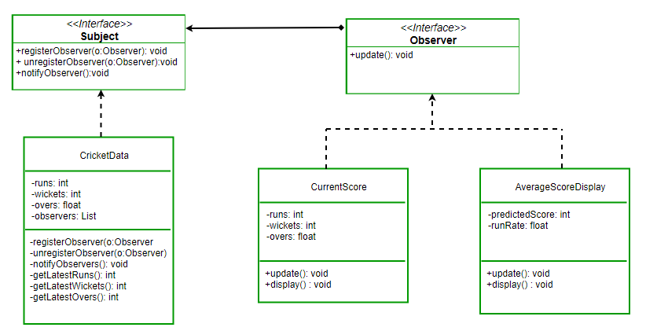

Patterns in Various Fields
Mathematics
The study of mathematics includes numbers and the different patterns in which they are listed. There are different types of patterns in mathematics, such as number patterns, image patterns, logic patterns, word patterns, and so on. The number pattern is the most commonly used one since students are aware of even numbers, odd numbers, skip counting, etc., which help in understanding these patterns easily.
Definition of Patterns
Patterns include a series or sequence that generally repeats itself. The patterns that we observe in our daily lives are those of colors, actions, shapes, numbers, etc. They can be related to any event or object and can be finite or infinite. In mathematics, patterns are a set of numbers arranged in a sequence such that they are related to each other in a specific rule. These rules define a way to calculate or solve problems. For example, in a sequence of 3,6,9,12,_, each number is increasing by 3. So, according to the pattern, the last number will be 12 + 3 = 15. The following figure shows the different types of patterns and sequences that can be formed with numbers.
Number Pattern
Number patterns are a common type of pattern in mathematics, where a list of numbers follows a specific sequence based on a rule. Examples include arithmetic patterns, geometric patterns, and the Fibonacci pattern.
Arithmetic Pattern
An arithmetic pattern is a sequence where numbers are related by addition or subtraction. For example, in the series 4, 8, ___, 16, 20, ___, the rule is to add 4 to the previous number. Thus, the missing numbers are 12 and 24.
Geometric Pattern
A geometric pattern is based on multiplication or division. For example, in the series 6, 18, 54, __, 486, __, the rule is to multiply by 3. The missing numbers are 162 and 1458.
Fibonacci Pattern
The Fibonacci pattern is a sequence where each number is the sum of the two previous numbers. For example: 0, 1, 1, 2, 3, 5, 8, 13.... The rule is: 0 + 1 = 1, 1 + 1 = 2, and so on.
Rules for Patterns
To find the rule for a pattern, observe the sequence carefully and note whether the numbers are in ascending or descending order:
Ascending order: Typically involves addition or multiplication. Descending order: Typically involves subtraction or division.Example: For the series 81, 27, 9, the numbers decrease by dividing by 3. The rule is: "Divide by 3".
Art & Design
Pattern in Art
Patterns are visual elements repeated in a predictable manner, creating harmony and rhythm in artworks. They can be natural, like spirals and waves, or man-made, such as geometric designs in architecture and textiles.
Types of Patterns
- Natural Patterns: Found in nature, including fractals (e.g., tree branches), line patterns (e.g., zebra stripes), and waves. Artists often draw inspiration from these organic patterns to bring a sense of realism and connection to the natural world in their work.
- Man-Made Patterns: Created by humans, evident in designs like spiral staircases, brick layouts, and textile motifs. These patterns reflect cultural significance and artistic expression, showcasing human creativity and the desire for aesthetic appeal.
- Geometric Patterns: Comprising shapes like circles, squares, and triangles, often used in both natural and human-made contexts. Geometric patterns provide structure and formality, frequently seen in architectural designs and abstract art.
-
Irregular Patterns: Variations that introduce dynamism and can convey energy or chaos in art. These patterns break the monotony, adding interest and movement, often used to evoke emotional responses.

Application in Art
Artists utilize patterns to enhance visual interest, establish balance, and convey movement. Patterns can serve as decorative elements or form the foundation of an artwork's composition. Through repetition and variation, patterns can lead the viewer's eye, create emphasis, and contribute to the overall narrative of the piece.
Examples in Art
Patterns are prevalent across various art forms and cultures, from Islamic geometric designs to African textile motifs, each reflecting unique aesthetic principles. For instance, the intricate tile work in Islamic architecture showcases complex geometric patterns symbolizing infinity and the divine, while African textiles often feature bold patterns representing cultural stories and traditions.
Music
Patterns in Music
Repetition is fundamental in music, creating catchy songs that resonate with listeners. Musical patterns, whether rhythmic or melodic, are sequences that immerse audiences through repetition and evolution. Understanding and utilizing these patterns can enhance music production and composition.
Rhythmic Patterns
A rhythm is a repeated sequence of sounds and silences forming the beat. These patterns can be simple or complex, evolving to propel a song forward. They serve as the foundation that listeners follow and musicians build upon. Key elements defining rhythm include:
- Tempo: The speed at which the music moves.
- Beat: The basic unit of time in a piece.
- Meter: Organization of beats into regular groups.
- Accentuation: Emphasis on certain beats or notes.
- Subdivision: Division of beats into smaller units.
- Syncopation: Shifting accents to create surprise.
- Rests: Pauses that enhance the rhythm's shape and feel.
Mastery of these elements allows musicians to create grooves that are both engaging and memorable.
Melodic Patterns
Melodic patterns, or tonal patterns, are sequences of musical notes arranged in rhythms that are memorable and repeatable. They constitute the singable aspect of a track, often serving as the "hook" in popular music. Variations in these patterns engage listeners and add diversity to a song. Common forms include:
- Harmonic Progressions: Sequences of chords repeated throughout a section, like the popular I-IV-V-I in blues.
- Motifs: Short melodic or rhythmic ideas that recur throughout a piece, providing thematic unity.
Effective use of melodic patterns can make a composition more appealing and memorable.
Creating Musical Patterns
Developing effective musical patterns involves understanding rhythm and melody. By combining rhythmic sequences with melodic motifs, musicians can craft compelling compositions that captivate audiences. Techniques include:
- Repetition: Reinforcing a musical idea to make it familiar.
- Variation: Altering a pattern to maintain interest.
- Development: Expanding and evolving patterns to add complexity.
Utilizing these techniques thoughtfully can enhance the emotional impact and structural integrity of a piece.
Examples of Musical Patterns
Patterns are prevalent across various music genres and cultures. For instance:
- Classical Music: The use of motifs and thematic development in symphonies.
- Jazz: Improvisation over established chord progressions and rhythmic patterns.
- Pop Music: Catchy hooks and repetitive choruses that engage listeners.
Recognizing and understanding these patterns can deepen appreciation and inform more effective music creation.
10 musical patterns you need to know:
Biology
Patterns in Biology
Patterns in biology arise from the self-organization of cells and tissues in time and space. These patterns are observed in various biological processes, such as segmentation in vertebrates, cell polarity, and organ arrangement in plants. Biological patterns are shaped by interactions across molecular, cellular, and tissue scales, driven by processes like gene expression, growth, migration, and cell-to-cell interactions.
Mechanisms of Biological Patterns
Biological patterns result from a combination of genetic, biochemical, and mechanical processes. Key mechanisms include:
- Turing Patterns: A reaction-diffusion mechanism where activator and inhibitor molecules interact to form stable spatial patterns.
- Mechanical Forces: Differential growth and mechanical stress influence tissue shaping, as seen in jellyfish canal networks.
- Gene Regulatory Networks: Oscillatory gene expression regulates periodic structures, such as vertebrate somites.
Applications of Pattern Modeling
Advances in mathematical and computational modeling have enhanced the understanding of biological patterns. Applications include:
- Morphogenesis Modeling: Simulating tissue and organ development using reaction-diffusion and agent-based models.
- Quantitative Analysis: Image processing tools extract spatial and temporal data from biological systems to validate models.
- Multiscale Frameworks: Incorporating cellular structures into simulations for better accuracy.
Examples of Biological Patterns
- Somitogenesis: Periodic structures formed through oscillatory gene expression and wavefront interactions in vertebrates.
- Cell Polarity: Spatial organization within cells that determines directional growth and development.
- Tracheal Ring Formation: Patterning influenced by chemotaxis and mechanical growth in airway development.
Interdisciplinary Importance
Understanding biological patterns requires collaboration across disciplines, including biology, mathematics, and physics. Quantitative and experimental approaches are essential for studying complex phenomena like morphogenesis, segmentation, and tissue formation.
Computation Thinking
What is Pattern Recognition?
Pattern recognition involves identifying similarities or characteristics among smaller, decomposed problems to solve complex problems more efficiently. It is one of the four cornerstones of Computer Science and a fundamental aspect of computational thinking. By recognizing patterns, we can streamline problem-solving processes and apply solutions across similar scenarios.
What are Patterns?
Patterns are common characteristics or features shared among entities or problems. For example, if we want to draw a series of cats, we know that all cats share common features:
- All cats have eyes, tails, and fur.
- Cats like to eat fish and make meowing sounds.
These shared characteristics form a pattern. By recognizing the pattern, we can draw or describe a cat by focusing on these common features. The differences among cats, such as eye color or fur type, can then be specified:
- One cat may have green eyes, a long tail, and black fur.
- Another cat may have yellow eyes, a short tail, and striped fur.
Patterns and similarities extend beyond individual differences. For instance, while all cats have tails, eyes, and fur, the specific characteristics can vary widely between individual cats.
Software Design Patterns
Software Design Patterns
Software design patterns are general, reusable solutions to common problems encountered during software development. They provide a template for how to solve a problem that can be used in many different situations, enhancing code readability and efficiency.
Types of Design Patterns
-
Creational Patterns: Deal with object creation mechanisms, trying to create objects in a manner suitable to the situation. Examples include:
- Singleton Pattern: Ensures a class has only one instance and provides a global point of access to it.
- Factory Method Pattern: Defines an interface for creating an object but allows subclasses to alter the type of objects that will be created.
-
Structural Patterns: Concerned with object composition, defining ways to compose objects to obtain new functionalities. Examples include:
- Adapter Pattern: Allows incompatible interfaces to work together by converting the interface of a class into another interface clients expect.
-
Composite Pattern: Composes objects into tree structures to represent part-whole hierarchies, allowing clients to treat individual objects and compositions uniformly.

-
Behavioral Patterns: Focus on communication between objects, defining how objects interact and fulfill responsibilities. Examples include:
- Observer Pattern: Defines a one-to-many dependency between objects so that when one object changes state, all its dependents are notified and updated automatically. 
-
Strategy Pattern: Defines a family of algorithms, encapsulates each one, and makes them interchangeable, allowing the algorithm to vary independently from clients that use it.

Benefits of Using Design Patterns
- Provide proven solutions to common problems, reducing the need for custom solutions.
- Enhance code readability and maintainability by providing standard terminology and practices.
- Promote best practices and efficient code reuse, leading to more robust and scalable software systems.
Conclusion
Understanding and applying software design patterns is essential for developers aiming to create efficient, maintainable, and scalable software. By leveraging these patterns, developers can address common design challenges effectively and contribute to the development of high-quality software systems.